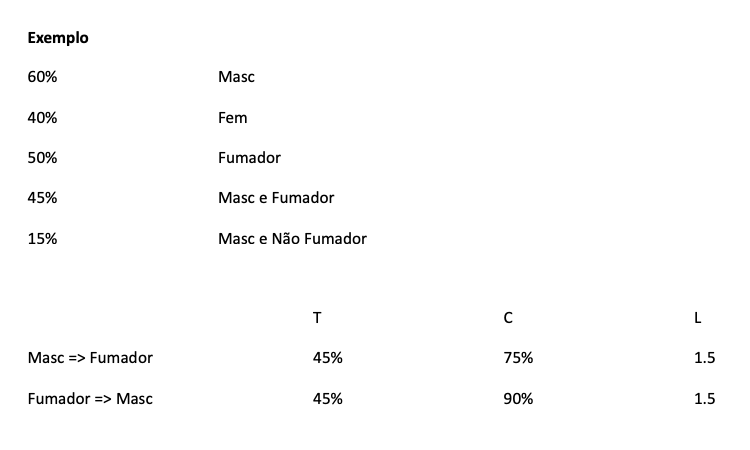
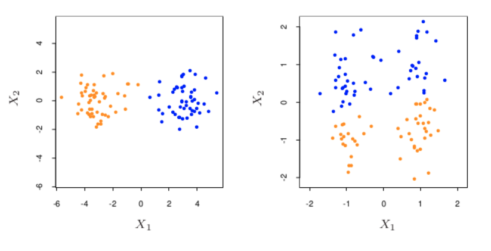
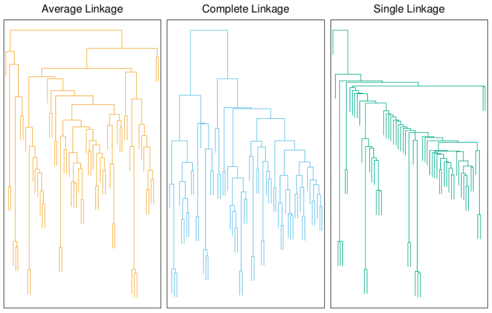

Lesson 07 - Unsupervised Machine Learning - Clustering and Association Rules#
Summary#
Dúvidas/revisões necessárias#
Expectation-Maximization
Conceitos#
Algoritmo APRIORI
Antecedente e consequente
Suporte de uma regra
Confiança de uma regra
Lift de uma regra
Tipos de algoritmos de clustering: A) combinatórios ou de partipação; B) Mistos; C) Procura de modas
Estatística Gap
Estratégias de agrupamento hierárquico: A) Aglomerativa (Bottom-up); B) Divisiva (Top-down)
Dendograma
Medicação da distância entre clusters (para agrupamento hierárquico): A) Complete linkage; B) Average Linkage; C) Single Linkage
Unsupervised Learning#
O paradigma de aprendizagem supervisionada pressupõe a seguinte metáfora:
existe um professor que ensina o sistema algo sobre o conceito a aprender; e
o aluno consegue então classificar casos novos;
existe uma função de erro de classificação dos casos novos. Nem sempre a extração de conhecimento tem como objetivo um conceito sobre o qual se pretende classificar os casos observados.
Aprendizagem Supervisionada
Objectivo: aprender características da probabilidade condicional
Aprendizagem Não supervisionada
Objectivo: aprender características da probabilidade
A dimensão de X é, normalmente, muito superior em problemas não supervisionados do que em problemas supervisionados. No entanto, X representa todas as variáveis em estudo, não sendo por isso necessário perceber como varia P(X) em função de outras variáveis (como nos problemas supervisionados). De qualquer forma, a elevada dimensionalidade do problema obriga à utilização de métodos descritivos muito simples.
Habitualmente: procuramos regiões de X onde P(X) seja elevada.
Por exemplo:
Componentes principais tentam encontrar subconjuntos de baixa dimensão com reduzida probabilidade que definem fronteiras de zonas com alta probabilidade.
Análise de agrupamentos tenta encontrar múltiplas regiões convexas de probabilidade semelhante.
Regras de associação tentam encontrar descrições sumárias de regiões com elevada densidade.
Regras de Associação#
Objectivo: encontrar valores conjuntos de X que ocorram frequentemente na base de dados. Habitualmente aplicado a variáveis binárias, denominando-se assim ‘market basket analysis’ (que itens foram comprados).
Para cada observação, cada variável Xj pode tomar um de dois valores:
1, se o item foi comprado nesta transação;
0, caso contrário. Os itens que têm frequentemente valores conjuntos de 1 são habitualmente comprados em conjunto (associados).
De uma forma geral, queremos encontrar um conjunto de valores v para as variáveis, de tal forma que a probabilidade conjunta P(v) seja relativamente elevada, procurando as modas conjuntas dos dados.
Mas com um número elevado de variáveis, e de valores possíveis para cada variável, o problema torna-se intratável.
Em vez de procurarmos os valores v tal que P(v) seja elevada, procuramos regiões do espaço de X com elevada probabilidade relativamente ao seu tamanho e suporte.
Tamanho do subconjunto:
Número de variáveis consideradas no subconjunto
Suporte (ou prevalência) do subconjunto:
Proporção de casos que verificam o subconjunto
Podemos procurar subconjuntos limitados por:
um determinado tamanho máximo; e/ou
um determinado suporte mínimo (definindo conjuntos frequentes).
Regras de Associação - APRIORI
Objectivo: encontrar os subconjuntos frequentes.
Se o limite de suporte for elevado o suficiente, reduzindo o número de conjuntos possíveis, a sua obtenção é computacionalmente exequível. Seja t o limite para o suporte, o algoritmo Apriori tira partido de duas características:
a cardinalidade do conjunto com suporte > t é pequena; e
um conjunto B que tenha apenas um subconjunto das variáveis do conjunto A terá sempre suporte igual ou superior ao de A.
Ou seja, para encontrar os conjuntos frequentes de tamanho m apenas consideramos candidatos cujos ascendentes de tamanho m-1 sejam frequentes.
Algoritmo:
Na primeira leitura dos dados calcula-se o suporte dos subconjuntos de tamanho 1 (uma variável), e exclui-se os que tenham suporte inferior a t.
Na segunda leitura dos dados calcula-se o suporte dos subconjuntos de tamanho 2 que possam ser criados por pares dos conjuntos anteriormente aceites, e excluem-se os que tenham suporte inferior a t.
Aplica-se sucessivamente até que não existam candidatos com suporte superior a t.
Se o conjunto de dados for grande mas esparso, o algoritmo termina em pouco tempo.
Os conjuntos frequentes são então incluídos num grupo de Regras de associação Se um conjunto tiver várias variáveis positivas (e.g. sexo=masculino, fumador=sim, dislipidemia=sim), elas são divididas em dois conjuntos disjuntos (A e B), e escreve-se A => B A é o antecedente e B o consequente, e cada um pode conter uma conjunção de várias variáveis, não necessariamente com significado causal (e.g. enfarte pode aparecer no antecedente e sexo no consequente).
O suporte da regra T(A=>B) é o suporte do subconjunto encontrado anteriormente.
estimativa da probabilidade P(A e B) A confiança da regra C(A=>B) é o suporte dividido pelo suporte do antecedente C(A=>B) = T(A=>B) / T(A)
estimativa da probabilidade condicional P(B|A) O lift da regra L(A=>B) é a confiança dividida pela confiança esperada (suporte do consequente) L(A=>B) = C(A=>B) / T(B)
estimativa da medida de associação P(A e B) / [P(A) P(B)]
Exemplo Subconjunto {sexo=masculino, fumador=sim, dislipidemia=sim} e a regra {sexo=masculino, fumador=sim} => dislipidemia=sim Um valor de suporte de 0.03 significa que a o subconjunto aparece em 3% dos casos observados. Uma confiança de 0.82 significa que, quando observamos indivíduos do sexo masculino e fumadores, então em 82% dos casos eles têm dislipidemia. Se 43% dos casos tiverem dislipidemia, então o lift da regra seria 1.91.

Como definir o antecendente (A) e o consequente (B)?
Procuramos regras com elevado suporte e confiança.
O algoritmo dá-nos as regras com suporte acima do limite t e confiança acima de outro limite c. {A=>B | T(A=>B)>t & C(A=>B)>c} Podemos procurar apenas as regras que tenham o consequente desejado.
Problemas
Formato restritivo dos dados.
Limite de suporte é necessário para computabilidade da procura.
Regras com elevada confiança ou lift, mas baixo suporte, nunca serão encontrados
e.g. procurar reacções adversas no consequente.
Classificação Automática#
Análise de Clusters
Objectivo: segmentar X em K grupos (clusters) de objectos (instâncias) tal que objectos no mesmo grupo sejam mais semelhantes entre si do que objectos em grupos diferentes. Por vezes interessa encontrar também a hierarquia de grupos, ou simplesmente definir se X pode ser descrito por grupos ou não. Os objectos podem ser descritos por si ou pelas distâncias para outros objectos. As medidas de semelhança/distância dependem do tipo de dados (contínuos, discretos, etc.).
Semelhança: medida de proximidade (ou distância) entre instâncias de X A semelhança entre objectos define os grupos:
medidas diferentes originam agrupamentos diferentes. A qualidade de uma definição de clusters pode ser medida pela distância final entre os objectos (dentro e fora) dos clusters.
semelhante a uma função de erro em aprendizagem supervisionada.
Exemplo: conjunto artificial bidimensional de dados, X, agrupados com K-Means (k=3):
escolhe-se k centróides aleatoriamente;
cada ponto restante é atribuído ao cluster com centróide mais próximo (distância Euclideana);
recalcula-se os centróides com base nos pontos de cada cluster;
repete-se 2 e 3 enquanto houver mudança de pontos por cluster.
Matrizes de Proximidade
Muitas vezes os dados são recolhidos como distâncias entre objectos e.g. não se sabe a localização exacta de um sensor, mas sim a distância a que ele se encontra de outros sensores.
Estes dados são guardados em matrizes NxN, possivelmente simétricas com diagonal zero. A maior parte dos algoritmos de clustering opera nestas matrizes. Nem sempre se verifica a desigualdade triangular, pelo que estas medidas de (dis)semelhança não são verdadeiras distâncias.
Distâncias baseadas em atributos
Na maior parte dos casos, teremos as medições de cada objecto. A matriz de dissemelhança pode então ser calculada usando as distâncias entre pares de pontos. Normalmente calcula-se a distância entre duas instâncias A e B, para cada atributo separadamente, d(A,B), e depois soma-se as distâncias de cada atributo para obter a distância final entre as duas instâncias D(A,B) O mais comum em variáveis contínuas é usar-se a soma dos quadrados, mas é possível ter de dar pesos diferentes aos atributos, ou usar outras distâncias caso o tipo de variável assim o obrigue.
Distância de objectos
Ao calcular a distância entre objectos, diferentes atributos têm diferentes influências. Surge, por vezes, a necessidade de pesar os atributos de acordo com a sua influência: e.g. não permitir que os grupos acabem por ser definidos devido apenas a um atributo muito influente. Uma forma de limitar é atribuir, na soma das distâncias, um peso a cada atributo, e.g. dividir pela distância média observada, nesse atributo, nos dados
Claro que nem sempre é desejável normalizar os atributos! Se o objectivo é segmentar os dados em grupos de objectos semelhantes, então uma variação pequena num atributo pode significar uma dissemelhança maior entre instâncias, do que uma variação grande noutro atributo e.g. valor de uma análise realizada vs idade Se o objectivo é encontrar grupos naturais de objectos semelhantes, então convém dar mais peso aos atributos que melhor distingam esses grupos, optimizando o resultado obtido

O tratamento de dados omissos é muito importante:
devemos eliminar da análise as instâncias onde existem dados omissos?
devemos imputar os casos omissos com valores médios ou medianos?
consideramos dois objectos semelhantes, em relação a um atributo, se estes tiverem um valor omisso nesse atributo?
dois objectos, ambos omissos relativamente a um atributo, são iguais nessa dimensão?
A definição da medida de distância correcta para cada problema é muito mais importante do que a escolha do algoritmo de clustering.
Algoritmos#
Algoritmos de Clustering
Pretendem encontrar grupos de objectos onde a semelhança intra-clusters seja superior à semelhança interclusters.
Podem ser de 3 tipos:
Combinatórios (ou de partição) - trabalham sobre os dados, sem informação subjacente de probabilidade.
Modelos mistos - assumem que os dados são produzidos i.i.d. de acordo com uma distribuição de probabilidade por componentes (cada componente, um cluster).
Procura de modas
Algoritmos de Combinatórios
Definem uma codificação de X → K, tal que a cada objecto de X é atribuído um de K clusters. O objecHvo destes algoritmos é minimizar uma medida de erro, que define quão longe está o clustering ópHmo de ser encontrado. Só que este problema de opHmização é NP-diPcil! (pelo menos tão diPcil como os mais diPceis NP) A maior parte dos algoritmos usa uma estratégia de descida gulosa do gradiente.
K-means
Mais famoso algoritmo de clustering de descida iterativa do gradiente, para
variáveis contínuas, e
distância Euclideana. Como cada passo do algoritmo minimiza a distância intra-cluster, o algoritmo converge (mas para um mínimo local).
Para prevenir os mínimos locais, podemos:
inicializar o algoritmo com diferentes valores para os centróides, e usar o resultado final que minimize as distâncias.
escolhe-se k centróides aleatoriamente;
cada ponto restante é atribuído ao cluster com centróide mais próximo (distância Euclideana);
recalcula-se os centróides com base nos pontos de cada cluster;
repete-se 2 e 3 enquanto houver mudança de pontos por cluster.
Variantes#
Soft K-means (EM)
K-means é muito semelhante a estimar uma densidade de probabilidade baseada em misturas de Gaussianas.
Expectation-Maximization
Passo E: define-se as responsabilidade de cada cluster para cada objecto.
Passo M: recalcula-se as densidades de cada componente baseadas nas responsabilidades actuais.
Itera-se os dois passos enquanto a variação for superior a um limite.
O algoritmo define uma atribuição probabilística de objectos a clusters.
K-medoids
K-means tem como limitações, entre outras:
aplicar-se apenas a variáveis quantitativas;
usar a distância Euclideana, que dá mais peso aos atributos com valores superiores de distância.
Podemos melhorar estas limitações, à custa de mais computação:
em vez de calcular médias para cada atributo (centróide) escolhemos o objecto que minimiza a distância intra-cluster (medóide);
podemos, então, usar qualquer medida de distância entre os objectos.
Enquanto cada iteração do k-means é O(KN), cada iteração do k-medoids é O(KN2)
Agrupamento Hierárquico#
Em vez de procurarmos um número K de clusters podemos ver como se define a hierarquia. Cada cluster num nível superior da hierarquia é composto agregando clusters do nível mais baixo seguinte na hierarquia.
No nível inferior, cada cluster tem apenas uma instância.
No nível superior, um cluster tem todas as instâncias.
Estratégias:
Aglomerativa (bottom-up)
Divisiva (top-down)
Aglomerativa
No nível inferior, cada cluster tem apenas uma instância.
Os dois grupos com menor distância inter-cluster são agregados.
Sucessivamente, vão sendo agregados os grupos resultantes.
Divisiva
No nível superior, um cluster tem todas as instâncias.
O cluster com maior distância intra-cluster é dividido de forma a produzir dois grupos com maior distância inter-cluster.
Sucessivamente, vão sendo divididos os grupos resultantes.
Distância entre os clusters:
Average linkage
Distância média entre dois objectos, um de cada cluster.
Compromisso entre as outras duas medidas, tende a encontrar grupos relativamente bem separados e relativamente compactos.
Complete linkage
Distância entre os dois objectos mais distantes, um de cada cluster.
Clusters com pontos muito afastados são considerados afastados, tendendo a produzir clusters compactos mas muito pequenos, podendo quebrar a regra de “proximidade” (que diz que os pontos de um cluster deverão ser mais próximos de outros pontos desse cluster do que de pontos de outros clusters).
Single linkage
Distância entre os dois objectos mais próximos, um de cada cluster. Quando os dados estão naturalmente bem segmentados em clusters compactos, todas as três medidas dão bons resultados.
Clusters com pontos próximos são considerados próximos, tendendo a produzir clusters grandes mas pouco compactos, podendo quebrar a regra de “compactação” (os pontos de um cluster tendem a ser semelhantes uns aos outros).
